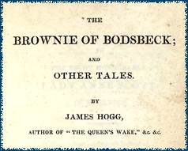

|
|
|||
|
|
Welcome | Corson Collection | Biography | Works | Image Database | Recent Publications | Portraits | Correspondence | Forthcoming Events | Links | E-Texts James Hogg and Sir Walter Scott |
||
|  |
Click on the thumbnail to view the full-size image of the title page of James Hogg's novel The Brownie of Bodsbeck
|
||
|
A study of the relationship between Sir Walter Scott and James Hogg (1770-1835), the Ettrick Shepherd, is important in the light of the recent belated recognition of Hogg as a major Scottish writer. Hogg's present standing, founded mainly on a new appreciation of his most significant work The Private Memoirs and Confessions of a Justified Sinner, is in stark contrast to the neglect that he has suffered since Scott's day. Though Hogg did enjoy considerable success and popularity during his lifetime, his fame was based on his poetry, which is now all but forgotten and rarely read. His success was also partly due to his association with Scott, whose patronage and friendship was to provide Hogg with valuable contacts and financial help. The two writers were both raised in the Scottish Borders, although in Scott's case only partly. Scott's upbringing in Sandyknowe with his grandparents initiated and influenced his entire literary career, which started with the publication of a collection of Border ballads in The Minstrelsy of the Scottish Border in 1802. It was while researching this publication that he became acquainted with Hogg. Hogg was born in 1770 in the parish of Ettrick, a remote and isolated community. When six years old, his father, a tenant-farmer became bankrupt. Hogg was forced to leave school and to spend the rest of his childhood in service on varius farms. Between the ages of six and fifteen, Hogg claims to have neither read nor written, and to have had experienced great difficulty when trying to write again in his late teens. Nonetheless, his first poem was published in the Scots Magazine when he was only twenty-three. He did not achieve poetic fame though until 1813 when his long poem The Queen's Wake, made the 'Ettrick Shephard' a literary celebrity but with a fame depending on curiosity value. His writings were seldom judged objectively without reference to Hogg's humble origins. Fame increased through the Noctes Ambrosianae of Blackwood's Magazine, which purported to represent the table-talk of the Blackwood group. These were mainly the work of John Wilson ('Christopher North') though Hogg himself also contributed and further popularized the picture of Hogg as an untutored child of nature. 'a boozing buffoon'. Prints showed him with open mouth roaring drunkenly. Butt of Blackwood wits: reaction varied from anger to good-natured enjoyment, enjoyed the wide publicity and frequently encouraged interest in him as an autodidact. His Familiar Anecdotes of Sir Walter Scott offended Lockhart who was at that time engaged on the official biography of his father-in-law. He find Hogg tactless in speculating about Lady Scott's parentage and comparing Scott's condition in the final stage of his illness to that of a drunken man. Comments too on Scott's excessive sympathies for 'old aristocracy of the country. Lockhart vetoed UK publication so it was published by Harper and Brothers in New York, April 1834. It did though appear in June 1835 in a Glasgow reprint (John Reid & Co.). Pirated edition: The Domestic Manners and Private Life of Sir Walter Scott. Omitted passages objected to by Lockhart. Hogg was a shepherd working on the land of Scott's friend William Laidlaw, and it was Hogg, raised in the true Border tradition, who supplied Scott with some of the poetry and ballads which appear, albeit altered, in the Minstrelsy. Both writers demonstrated astonishing narrative sophistication, some of it certainly intuitive, some of it clearly derived from their knowledge of oral Border narrative traditions. However, where Scott's Romanticism looked to some extent towards German or European models, Hogg's was deeply rooted in and reflective of his traditional Scottish rural background. This had everything to do with class - Scott was a staunch Edinburgh Tory with aristocratic aspirations, educated in Edinburgh, while the self-educated Hogg could never shake off the tag of the rustic 'Ettrick Shepherd'. Hogg cut a rough figure among the Edinburgh intelligentsia, much in the same way as Burns must have done a generation before, though Hogg was never to achieve the latter's reputation during his lifetime. This could be attributed to the fact that the Romantic fashion for the peasant poet which had favoured Burns in the 1780s had all but died out by the time Hogg was writing in the 1820s. As with so many of Scott's acquaintances, Hogg remained a lifelong friend, and Scott aided his career as a writer wherever possible. Scott recognized and acknowledged Hogg's raw genius, but was guilty, along with his contemporaries, of misunderstanding Hogg's objectives in his later work, particularly in his prose. In a letter to John Murray he writes: "Hoggs Tales are a great failure to be sure. With a very considerable portion of original genius he is sadly deficient not only in correct taste but in common tact" (Letters V, p. 140). Scott was, however, a tireless and generous patron, helping his friend through his own influence wherever possible. In one of several letters to Lady Dalkeith on Hogg's behalf, Scott promises to assure the Duke of Dalkeith, whose patronage Hogg was seeking, of Hogg's "skill & character. His charge seems moderate and I will answer for his honesty--" (Letters I, p. 300). Scott's letters reveal his fondness for Hogg together with a patronizing stance to his work and social demeanour. Hogg clearly did not assimilate into fashionable Edinburgh society: a genius on the fringe, he struggled for recognition and was eventually ridiculed by the very people he worked for at Blackwoods Magazine. Scott's own son-in-law and biographer, John Gibson Lockhart, a contributor to Blackwoods, took a particular dislike to Hogg, not least when, following Scott's death in 1832, Hogg published his Familiar Anecdotes of Sir Walter Scott. Lockhart claimed that Hogg had 'insulted his [Scott's] dust', though in exactly what way remains unclear, for Hogg displays an unmistakable admiration for Scott: "He was truly an extraordinary man; the greatest man in the world. What are kings and Emperors compared with him? Dust and sand!" Lockhart's dislike of Hogg is a reflection of Hogg's particular difficulties with contemporary Edinburgh society. As Douglas Mack points out, Lockhart's anger could be interpreted as that of a man with aristocratic pretensions who finds the affairs of his father-in-law and family discussed in print by a man of lowly social background. Lockhart personified the gentrified, somewhat arrogant character of Enlightenment Edinburgh which Hogg found so hard to penetrate, and which to a large extent was responsible for the failure of his work in the public eye. Despite Scott's ambivalence to Hogg's later work, there was more to unite Scott and Hogg artistically than to separate them. Their subject matter for example often coincided, including Edinburgh, folklore, sympathy for the working classes, music, antiquarianism and Calvinism. Even their narrative techniques seemed to compliment each other with Scott's Redgauntlet and Hogg's Private Memoirs and Confessions of a Justified Sinner (both published in 1824) - both are constructed through fictional letters or diary entries with the voice of a fictional editor interposed between the entries. It is interesting to compare their developments as writers. Both started their literary careers with a mutual fascination for Border ballads and traditions, and both first wrote poetry in the context of these traditions before gradually developing their own style of literary prose. Although both are now primarily regarded as novelists, they achieved fame through their narrative verse. Hogg's success during his lifetime arose almost entirely from his poetry, which included The Queen's Wake, while Scott's meteoric career took off with now relatively little read poems such as Marmion, The Lady of the Lake and Rokeby. The arrival of Byron on the literary scene, combined with the comparative drop in interest in his poetry after 1813, convinced Scott to turn his hand to prose. Waverley was published in 1814. Hogg too saw the need to experiment with new modes of narrative expression, which were to be found in the novel form. This, though, is where their paths separated, as Scott's success at novel writing was immediate and unconfined, while Hogg's stature gradually diminished in the public eye. Both writers have also suffered posthumously from shortsighted
criticism, heavy editing and changes in literary taste, particularly
at the beginning of the twentieth century. Scott was enormously
popular on a global scale during his lifetime, and Hogg enjoyed
success through his poetry. By the beginning of the twentieth century
however, Scott's work had suffered from critical snobbery - in schools,
only his medieval romances remained on the shelves, and those more
by way of children's books. Hogg however suffered far more seriously,
and for a greater period of time. His Confessions of a justified
Sinner were edited and re-edited to the point where they bore
little artistic relation to Hogg's original conception, and were
all but lost to the world until the 1960s. It is only now, with
the help of new enlightened criticism and recent publications such
as the Sterling/South Carolina editions, that Hogg is finally taking
his rightful place next to Scott as one of Scotland's greatest literary
figures. Both writers were accomplished poets as well as novelists,
and their reputations are being saved from niche criticism and selectivity.
Both writers also have a part to play in each other's careers. The
accounts Scott and Hogg wrote of each other also form part of the
Corson Collection. These provide an
insight into a fascinating partnership and rivalry. Last updated: 24-Oct-2003 |
|||